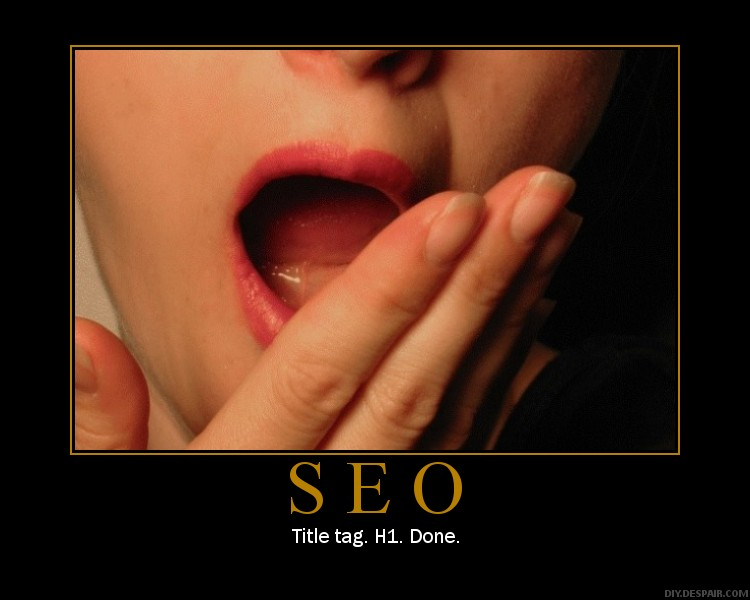
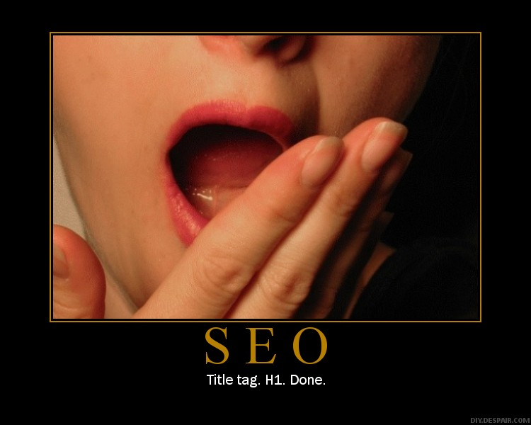

rankmaniac 2012 index spiders besides online discussing

et rankmaniac 2012 up websites simply to host links to your main site Add your site to DMOZ Yahoo Directories Check where your competitors links are coming from Write and submit articles for Internet publication Submit your site to local and industry directories rankmaniac 2012 Look for link partners but dont spend too much time on it Link generation takes a long time no matter how you do it SEO Secrets V1.3 Copyright Divine Write Copywriting Pty Ltd 36 Step 6 Monitor your progress 36 Step 6 Monitor your progress Now that youve done the lions share of the hard work you can sit back and observe the results of your handiwork. Its very important that you monitor your progress. Keep rankmaniac 2012 an eye on how many links youre generating where theyre coming from and the rankmaniac 2012 overall impact on your ranking. Monitor how many links youre rankmaniac 2012 generating Its important to monitor how many links youre generating because you can crossreference that information rankmaniac 2012 against improvements in ranking to estimate how much effort your SEO push is going to take. e.g. If you generate 300 links rankmaniac 2012 and your site goes from number 150 to number 15 you know that you should be topping the rankings before too long. If on the other hand your ranking rankmaniac 2012 has only marginally rankmaniac 2012 increased you know you need to work a lot harder. You can monitor how many links youre generating in a number of ways Search Google for www.yourdomainname.com. Google will then display a screen rankmaniac 2012 which says Google can show you the following information for this URL At the bottom of the list of option is Find web pages that contain the term www.yourdomainname.com. Click on this option. Google will display all the pages it can find that have www.yourdomainname.com on one of their pages. Normally this indicates a link to your site. TIP Bookmark the search results page so you can perform rankmaniac 2012 this search quickly and rankmaniac 2012 easily as you will probably find yourself doing it quite often. Go to httpwww.marketleap.compublinkpop and type in your domain name. This tool itemizes your links by search engine i.e. tells you how many links each search engine has found and also provides graphical trends. Go to httpwww.alexa.com and type in your domain name then click Sites Linking in from the left of the page. TIP Alexa can also be used to track your ranking metrics. SEO Secrets V1.3 Copyright Divine Write Copywriting Pty Ltd 37 Step 6 Monitor your progress 37 TIP Youll notice that each of these tools return different figures. Dont worry about this. Just pick a tool and stick with it this way youre always comparing apples with apples. Monitor whos linking to your site Always keep track of whos linking to your site. Apart from simply being interesting it will give you some idea of who is interested in your site and your material you rankmaniac 2012 can assess their importance PR and also more accurately target their needs with future link generation tactics. Probably the easiest way to track whos linking to your site is to set up a Google Monitor at httpwww.google.comalerts. Google alerts notify you when your URL has been published on a web page. Google doesnt pick them all up but it picks up a lot. TIP Whenever you receive an alert you can visit the page to make sure the article in unchanged and the link back to your site is functioning. Monitor your ranking Obviously you should be monitoring your ranking to ensure that your hard work is not wasted and to adapt your SEO and link generation strategy as needed. Manually You can check your ranking manually simply by doing rankmaniac 2012 a search for your keyword at the appropriate search engine. TIP If you prefer to check manually make sure you bookmark the search results page as youll probably find yourself performing this search fairly frequently. Dont perform it too frequently though as this can impact the perceived desirability of your keywords and it is argued that Google takes exception to repeated searches of this type. Automatically You can check all the major search engines AOL Google  HotBot MSN Netscape YahooFastAltaVista at once using MarketLeaps verification tool httpwww.marketleap.comverifydefault.htm. NOTE This tool returns a page number e.g. it will tell you your site appears on page 2 of Yahoo. There are plenty of other tools out there that you can use to monitor your ranking such as CleverStats Free Monitor for Google see httpwww.cleverstat.comgooglemonitor query.htm. Shop around rankmaniac 2012 until you find the tool that rankmaniac 2012 suits you best. The important thing to SEO Secrets V1.3 Copyright Divine Write Copywriting Pty Ltd 38 Step 6 Monitor your progress 38 remember is that you dont have to pay anything for a rank monitoring tool as there are plenty of free ones on offer. Chapter Summary Monitor how many links you have and crossreference that information against improvements in ranking to estimate how much effort your SEO push is going to take. Monitor who is linking to your site to more accurately rankmaniac 2012 adapt future link generation tactics. Monitor your ranking and adapt your SEO and rankmaniac 2012 link generation strategy as needed. SEO Secrets V1.3 Copyright Divine Write Copywriting Pty Ltd 39 Conclusion 39 Conclusion Search Engine Optimization is not a black art its a science. There are defined rules and proven methodologies. And although theres a lot more to it than can be contained in a book of this size you shouldnt need any more than what youve just read to obtain a high ranking in the search engines. But theres no denying that rankmaniac 2012 its hard work and takes a long time. Whatever you do dont rush into it. Make sure you rankmaniac 2012 understand the fundamentals then take some time to plan your approach. In other words SEO strategy must be part of your marketing plan alongside traditional promotional activities such as print radio and TV. Just as importantly it must be part of your marketing budget. Dont fall into the trap of thinking that the search engines are free rankmaniac 2012 advertising. Theyre not Companies like Google and Yahoo may not accept payment for a high ranking but that doesnt mean it comes for free. Someone has to do the work to get you there. Whether you
HotBot MSN Netscape YahooFastAltaVista at once using MarketLeaps verification tool httpwww.marketleap.comverifydefault.htm. NOTE This tool returns a page number e.g. it will tell you your site appears on page 2 of Yahoo. There are plenty of other tools out there that you can use to monitor your ranking such as CleverStats Free Monitor for Google see httpwww.cleverstat.comgooglemonitor query.htm. Shop around rankmaniac 2012 until you find the tool that rankmaniac 2012 suits you best. The important thing to SEO Secrets V1.3 Copyright Divine Write Copywriting Pty Ltd 38 Step 6 Monitor your progress 38 remember is that you dont have to pay anything for a rank monitoring tool as there are plenty of free ones on offer. Chapter Summary Monitor how many links you have and crossreference that information against improvements in ranking to estimate how much effort your SEO push is going to take. Monitor who is linking to your site to more accurately rankmaniac 2012 adapt future link generation tactics. Monitor your ranking and adapt your SEO and rankmaniac 2012 link generation strategy as needed. SEO Secrets V1.3 Copyright Divine Write Copywriting Pty Ltd 39 Conclusion 39 Conclusion Search Engine Optimization is not a black art its a science. There are defined rules and proven methodologies. And although theres a lot more to it than can be contained in a book of this size you shouldnt need any more than what youve just read to obtain a high ranking in the search engines. But theres no denying that rankmaniac 2012 its hard work and takes a long time. Whatever you do dont rush into it. Make sure you rankmaniac 2012 understand the fundamentals then take some time to plan your approach. In other words SEO strategy must be part of your marketing plan alongside traditional promotional activities such as print radio and TV. Just as importantly it must be part of your marketing budget. Dont fall into the trap of thinking that the search engines are free rankmaniac 2012 advertising. Theyre not Companies like Google and Yahoo may not accept payment for a high ranking but that doesnt mean it comes for free. Someone has to do the work to get you there. Whether you  spend the time to do it yourself or you engage an expert to do it for you SEO requires a serious investment. But the spoils are well worth it. Research suggests that being number 1 in Google means twice as much traffic as being number 2. Imagine how much difference it would make to your web traffic SEO Secrets V1.3 Copyright Divine Write Copywriting Pty Ltd 40 Frequently Asked Questions 40 Frequently Asked Questions Search engine optimization SEO is a foreign field to rankmaniac 2012 a lot of people. Rarely does a day go by when I dont get asked a few questions on the subject. So Ive decided to rankmaniac 2012 post this FAQ article in the hopes that it will help people understand the basics and make them a little more comfortable with the whole domain. Q Why are search engines important to me A 85 of all website traffic is driven by search engines. The only online activity more popular than search is email. 79.2 of US users dont go to page 2 of search results. 42 of users click on the no.1 result. For the under40 rankmaniac 2012 agegroup the Internet will become the most used media in the next 23 years. Q rankmaniac 2012 How do search engines decide on their rankings A IMPORTANT You cannot pay a search engine in return for a high ranking in the natural results. You can only get a high ranking if your content is seen as relevant by the search engines. Search engines identify relevant content for their search results by sending out spiders or robots which crawl analyze your site and index record its details. Complex algorithms are then employed to determine whether your site is useful and should be included in the search engines search results. Q Cant I just pay for a high ranking A No. The biggest concern for search engine companies like Google and Yahoo is finding content that will bring them more traffic and thus more advertising revenue. In other words their results must be relevant. Relevant results makes for a good search engine irrelevant results makes for a shortlived search engine. Most search engines these days return two types of results whenever you click Search NaturalOrganic The real search results. The results that most users are looking for and which take up most of the window. For most searches the search engine displays a long list of links to sites with content which is related to the word you searched rankmaniac 2012 for. These results are ranked according to how relevant and important they are. SEO Secrets V1.3 Copyright Divine Write Copywriting Pty Ltd 41 Frequently Asked Questions 41 Paid  Pure advertising. This is how the search engines make their money. Advertisers pay the search engines to display their ad whenever someone searches for a word which is related to their rankmaniac 2012 product or service. These ads look similar to the natural search results but are normally labeled Sponsored Links and normally take up a smaller portion of the window. Q How rankmaniac 2012 do I get a high ranking A There are four main steps Step 1 Use the right words on your website Step 2 Get lots of relevant sites to link to yours Step 3 Use the right words in those links Step 4 Have lots of content on your site rankmaniac 2012 add more regularly Q What
spend the time to do it yourself or you engage an expert to do it for you SEO requires a serious investment. But the spoils are well worth it. Research suggests that being number 1 in Google means twice as much traffic as being number 2. Imagine how much difference it would make to your web traffic SEO Secrets V1.3 Copyright Divine Write Copywriting Pty Ltd 40 Frequently Asked Questions 40 Frequently Asked Questions Search engine optimization SEO is a foreign field to rankmaniac 2012 a lot of people. Rarely does a day go by when I dont get asked a few questions on the subject. So Ive decided to rankmaniac 2012 post this FAQ article in the hopes that it will help people understand the basics and make them a little more comfortable with the whole domain. Q Why are search engines important to me A 85 of all website traffic is driven by search engines. The only online activity more popular than search is email. 79.2 of US users dont go to page 2 of search results. 42 of users click on the no.1 result. For the under40 rankmaniac 2012 agegroup the Internet will become the most used media in the next 23 years. Q rankmaniac 2012 How do search engines decide on their rankings A IMPORTANT You cannot pay a search engine in return for a high ranking in the natural results. You can only get a high ranking if your content is seen as relevant by the search engines. Search engines identify relevant content for their search results by sending out spiders or robots which crawl analyze your site and index record its details. Complex algorithms are then employed to determine whether your site is useful and should be included in the search engines search results. Q Cant I just pay for a high ranking A No. The biggest concern for search engine companies like Google and Yahoo is finding content that will bring them more traffic and thus more advertising revenue. In other words their results must be relevant. Relevant results makes for a good search engine irrelevant results makes for a shortlived search engine. Most search engines these days return two types of results whenever you click Search NaturalOrganic The real search results. The results that most users are looking for and which take up most of the window. For most searches the search engine displays a long list of links to sites with content which is related to the word you searched rankmaniac 2012 for. These results are ranked according to how relevant and important they are. SEO Secrets V1.3 Copyright Divine Write Copywriting Pty Ltd 41 Frequently Asked Questions 41 Paid  Pure advertising. This is how the search engines make their money. Advertisers pay the search engines to display their ad whenever someone searches for a word which is related to their rankmaniac 2012 product or service. These ads look similar to the natural search results but are normally labeled Sponsored Links and normally take up a smaller portion of the window. Q How rankmaniac 2012 do I get a high ranking A There are four main steps Step 1 Use the right words on your website Step 2 Get lots of relevant sites to link to yours Step 3 Use the right words in those links Step 4 Have lots of content on your site rankmaniac 2012 add more regularly Q What  is search engine optimization SEO A Search Engine rankmaniac 2012 Optimization SEO is the art of creating a website which is search engine friendly. This means using the right words in your copy using the right words in your HTML code structuring your site properly designing your site properly For more information on these 4 elements download our free SEO Secrets eBook from httpwww.divinewrite.comseosecrets.htm . Many people use SEO to also describe the other ingredient in a high rank
is search engine optimization SEO A Search Engine rankmaniac 2012 Optimization SEO is the art of creating a website which is search engine friendly. This means using the right words in your copy using the right words in your HTML code structuring your site properly designing your site properly For more information on these 4 elements download our free SEO Secrets eBook from httpwww.divinewrite.comseosecrets.htm . Many people use SEO to also describe the other ingredient in a high rank